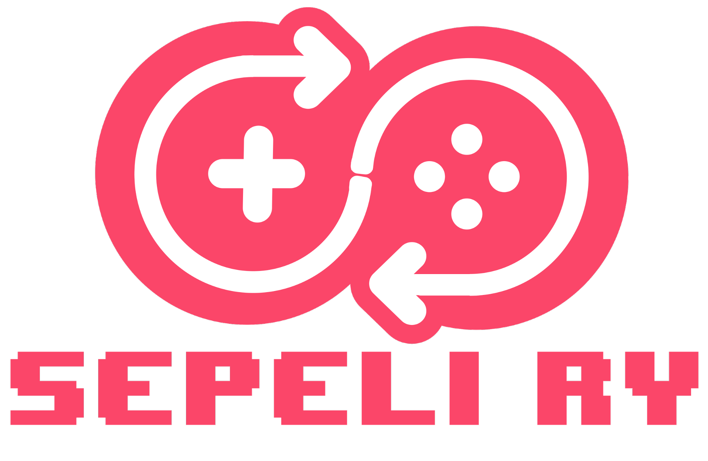

Sepeli ry on Seinäjoen Pelikehittäjien, voittoon tavoittelematon yhdistys joka on perustettu 2014 syksyllä. Sepelin päätavoite on kehittää pelikehittäjien yhteisöä Seinäjoella ja pitää erillaisia pelialan tapahtumia joilla innostetaan kaikkia perehtymään pelialaan. Sepeli järjestää talkoovoimin myös erillaisia pelialan koulutustilaisuuksia pitkin vuotta kaiken ikäisille ihmisille, kuten vuonna 2017 kesäkerho jossta suurin osa sivun materiaaleista on otettu. Sepelillä on n. 30 aktiivista jäsentä. Kaikki ovat vapaita liittymään jäseneksi, eikä jäsenyys maksa mitään. Mikäli haluat rekisteröityä Sepelin jäseneksi, paina tästä.